05:00
How to publish FAIR research outputs
Eirini Zormpa
The Alan Turing Institute
Introductions 👋

Eirini Zormpa, Community Manager Open Collaboration
Previously:
- Trainer on Research Data Management & Open Science @ Delft University of Technology 💻
- Doctoral Researcher @ Max Planck Institute for Psycholinguistics 🧠
Housekeeping
- If anything is unclear during the talk, please ask clarification questions at any time. Just raise your physical or virtual hand ✋
- For longer, content questions, please put them in the Slido for this session - use the code
#aimrsf-opensci. Don’t forget to upvote questions you agree with 👍
- We are following the Events Code of Conduct of The Alan Turing Institute 👥
- For online attendees: if you accidentally leave the session, you can just join back in with the same log-in details 🔗
Learning objectives
- ✅ To expand the definition of “research outputs”
- ✅ To define the FAIR principles
- ✅ To explain how to choose a repository
- ✅ To demonstrate how to use a repository for archiving research outputs
By the end of the workshop, you will be able to use a repository to archive research output in a FAIR manner.
Advertising scholarship
An article about computational science in a scientific publication is not the scholarship itself, it is merely advertising of the scholarship.
Jon Claerbout, paraphrased in Buckheit & Donoho (1995) (link, free version).
The actual scholarship
The actual outputs created during a research project will differ but some examples include:
- Preregistrations
- Presentations and posters on your findings
- Datasets
- Protocols and workflows
- Code (analysis scripts and software packages)
- Outputs related to other aspects of your work, e.g. educational materials
What to share?
The more you can share the better, within reason.
- At a minimum, you should share the data and code needed to confirm your findings.
- Additionally, a lot of work goes into creating those datasets and scripts, e.g. code lists, experimental protocols, consent forms.
Don’t worry that your outputs aren’t important! You never know what will end up being useful for others!
Evelina’s example

Evelina Gabasova, Principal Research Data Scientist
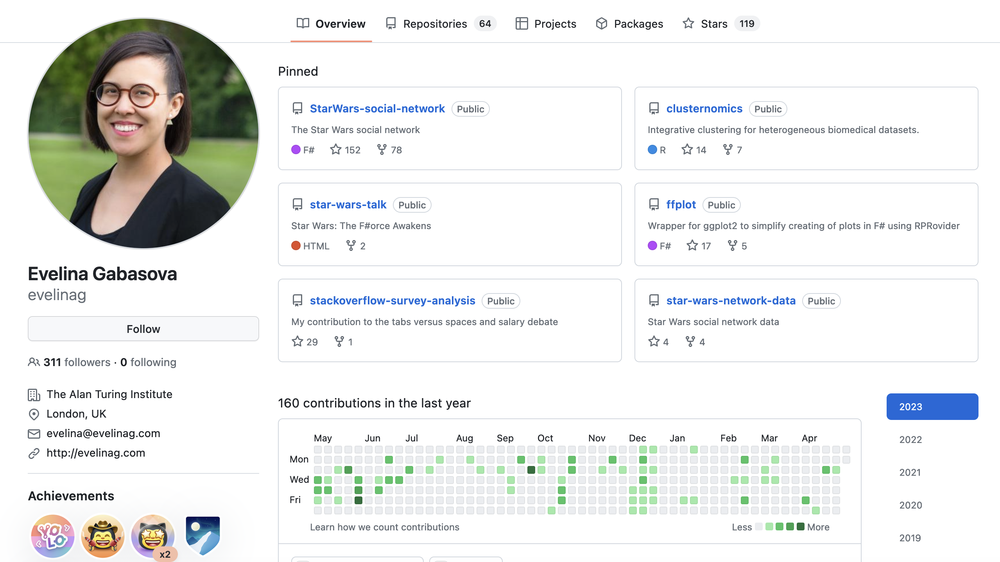
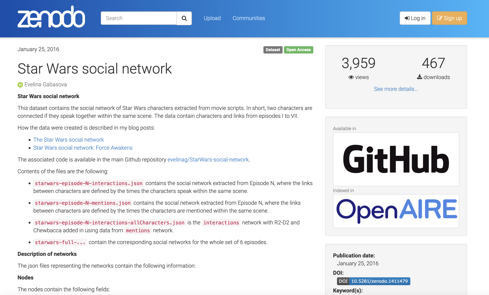
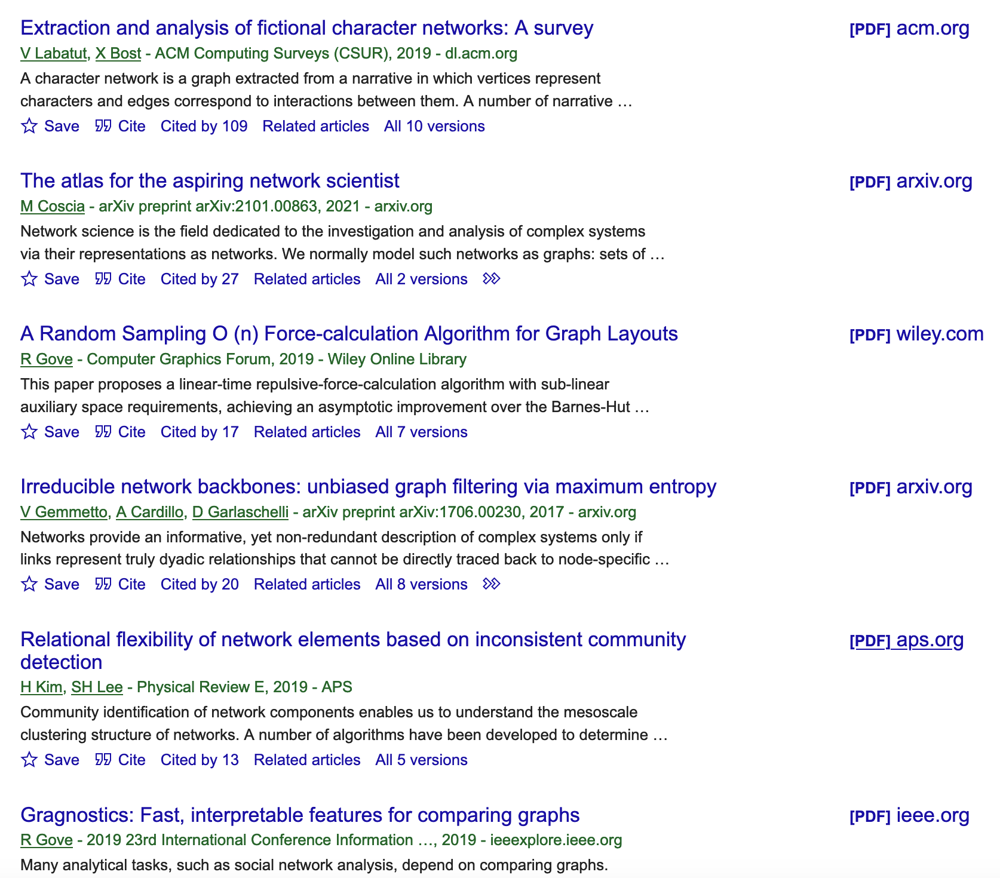
Why share all these other outputs?
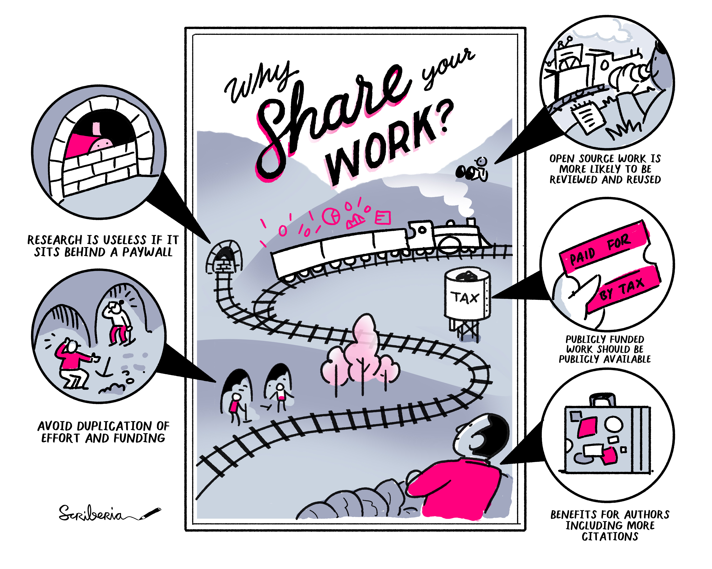What (not) to share
- Anything that you found online that isn’t licensed for reuse - more on licences later!
- An obvious issue is personal data, especially sensitive personal data - more on this later!
- Confidential data that’s commercially sensitive or relevant for national security - talk to the data provider about what you can share.
- Really big data (e.g. in quantum computing, cosmology) - think about what data is necessary and whether the data can be recreated.
How to share?

Findable: Metadata 🔍
First people need to be able to find your outputs!
For outputs to be findable, they need to be described with rich metadata. These metadata can be generic (e.g. title, author name, keywords) or discipline-specific.
Findable: Persistent identifiers 🔍
Outputs should also be assigned a unique and persistent identifier, e.g. a Digital Object Identifier (DOI). This makes it easy to find outputs, but also to link them with other relevant information (e.g. a publication).

Findable: Persistent identifiers for people 🔍
Persistent identifiers for researchers help if you have a common name or if you change your name!

Task: Create an ORCID iD
⏰ 5 minutes
- Navigate to https://orcid.org/ on your browser
- Select Sign in/Register and then Register as a new user
- Fill in the information required
Accessible: Define processes 🚪
After people have found your outputs they need to be able to access them! This could mean that they are publicly available in a repository.
⚠️ Sensitive information
Most of you will be working with sensitive personal information that need to stay restricted 🔒
In those cases, the access method should be described and the metadata should still be accessible.
Interoperable ⚙️
It’s important to make all your outputs available in open file formats, that anyone can open and edit.
Using controlled vocabularies is also highly recommended, if these exist in your field.
In how many different ways can you say “female”?
18-day pregnant females
female (lactating)
individual female
worker caste (female)
2 yr old female
female (pregnant)
sex: female
400 yr. old female
female (outbred)
mare
female (other)
adult female
female parent
female (worker)
female plant
femal
castrate female
female with eggs
ovigerous female
3 female
cf.female
female worker
oviparous sexual females
female (phenotype)
cystocarpic female
gynoecious
thelytoky
dikaryon
female virgin
dioecious female
femlale
female (gynoecious)
remale
metafemale
f
femele
sterile female
famale
normal female
femail
sf
female
females
tetraploid female
strictly female females only
worker
hexaploid female
healthy female
female (gynoecious)
probably female
female (note: this sample was originally provided as a “male” sample and labeled this way in the paper and original submission; however analyses carried out in the meantime clearly show that this sample stems from a female individual)
In how many different ways can you say “female”?
18-day pregnant females
female (lactating)
individual female
worker caste (female)
2 yr old female
female (pregnant)
sex: female
400 yr. old female
female (outbred)
mare
female (other)
adult female
female parent
female (worker)
female plant
femal
castrate female
female with eggs
ovigerous female
3 female
cf.female
female worker
oviparous sexual females
female (phenotype)
cystocarpic female
gynoecious
thelytoky
dikaryon
female virgin
dioecious female
femlale
female (gynoecious)
remale
metafemale
f
femele
sterile female
famale
normal female
femail
sf
female
females
tetraploid female
strictly female females only
worker
hexaploid female
healthy female
female (gynoecious)
probably female
female (note: this sample was originally provided as a “male” sample and labeled this way in the paper and original submission; however analyses carried out in the meantime clearly show that this sample stems from a female individual)
Dates
To avoid ambiguity, use the RFC3339 standard: YYYYMMDD.

Reusable: Documentation ♻️
To be able to reuse your work, people need to be able to understand it. This means you need to provide good documentation:
At a minimum, you should provide a README file where you describe what the project is about, how the files are organised and how to reproduce the project
Example of a README file
Reusable: Usage licences ♻️
You can’t just use everything that’s online; the creator* of the work holds the copyright to it!
You need to tell people what they can do with your work by providing a licence.
Usage licences are different for data and for code:
- Commonly used licences for data, presentations, papers etc. are the Creative Commons licences
- For code, use OSI-approved licences
Licence example
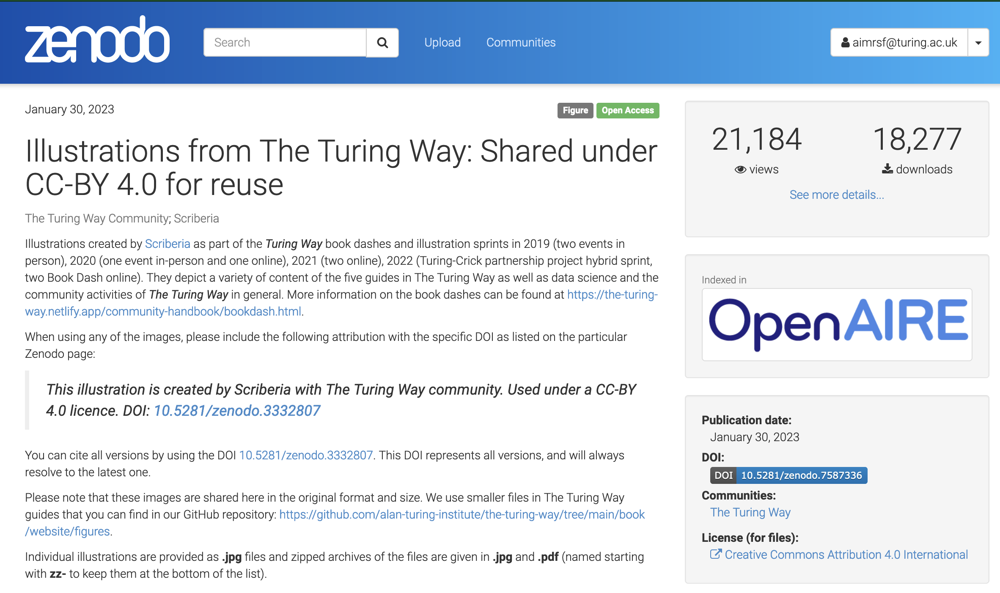Creative Commons (CC) licences

Where to share?
flowchart LR
A[Hard edge] --> B(Round edge)
B --> C{Decision}
C --> D[Result one]
C --> E[Result two]
Where to share: Supplementary materials
Pros 👍
- Convenient for author
- One output to cite (?)
Cons 👎
- Can be hard to find
- Not suitable for all outputs (in terms of privacy, file format, relevance)
- Not very FAIR (no separate PID, licence)
- Sustainability is unclear
Where to share: Repositories
Online storage spaces for sharing research data and other outputs: they can be generic or specific to a discipline or institute.
Pros 👍
- Provide a DOI or other PID
- Require metadata
- Require a usage licence
- Encourage documentation
- Encourage open file formats
- Continued access
Cons 👎
- Require more knowledge (e.g. to pick a repository, licence etc.)
- Could initially cause confusion in terms of whether the publication or this deposisition should be cited.
Discipline-specific repositories
Where possible, it’s a good idea to use a disclipline-specific repository, usually for data and publications.
- The metadata standard is likely to be tailored to the data you work with
- It is possible that there are restricted access options to account for privacy concerns.
- Fewer people may see your data, but they’re more likely to be interested in it.
How to find repositories?

Health data
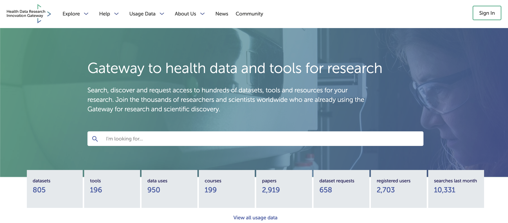
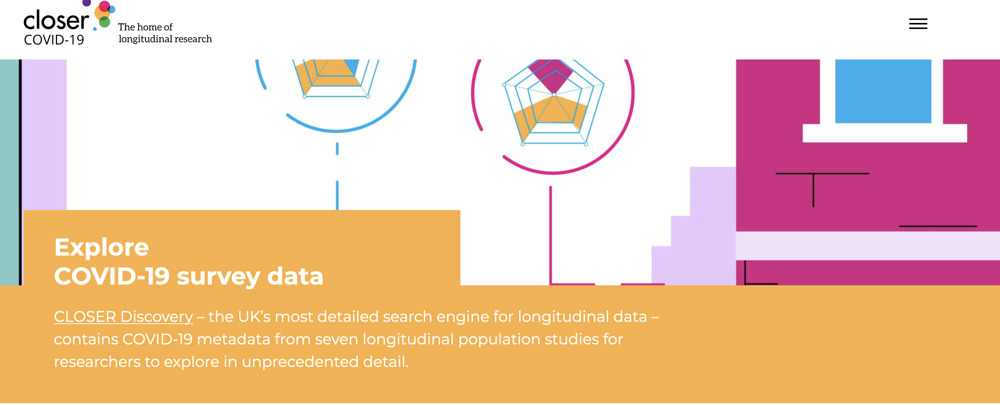

Other human biological data
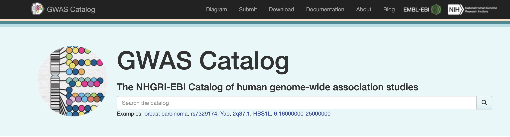
Protocols
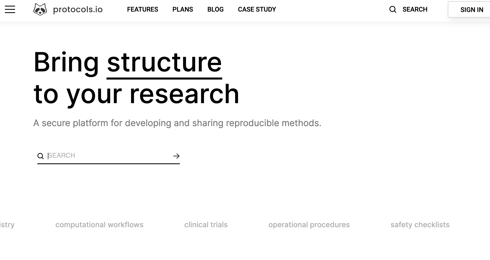
Generic repositories
A domain-specific repository is not always available, or it may not make sense for your outputs. In that case there are generic repositories that are domain-agnostic and which accept a broad range of outputs (e.g. from data to illustrations).
Zenodo
Zenodo is an open repository that accepts most research outputs.
- ✅ Funded by CERN, OpenAIRE, and the European Commission.
- ✅ Built on open source infrastructure
- ⚠️ Most resources are Open Access, though embargo and restricted options exist.
Zenodo communities
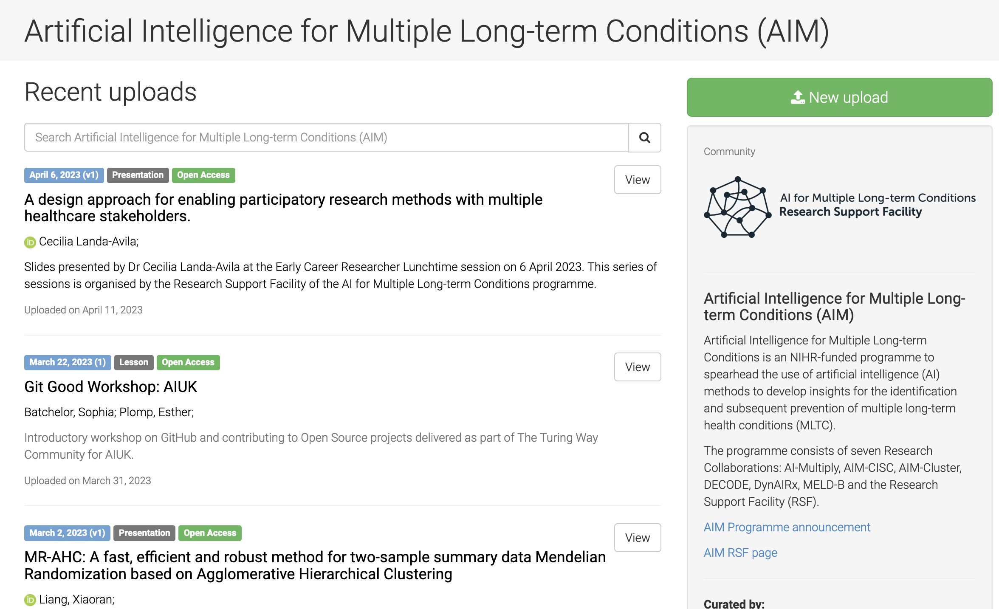Demo of data upload
Just watch me for now 💻👀
Picking a repository
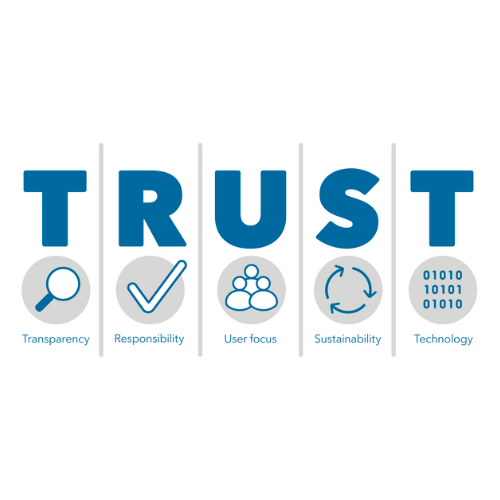
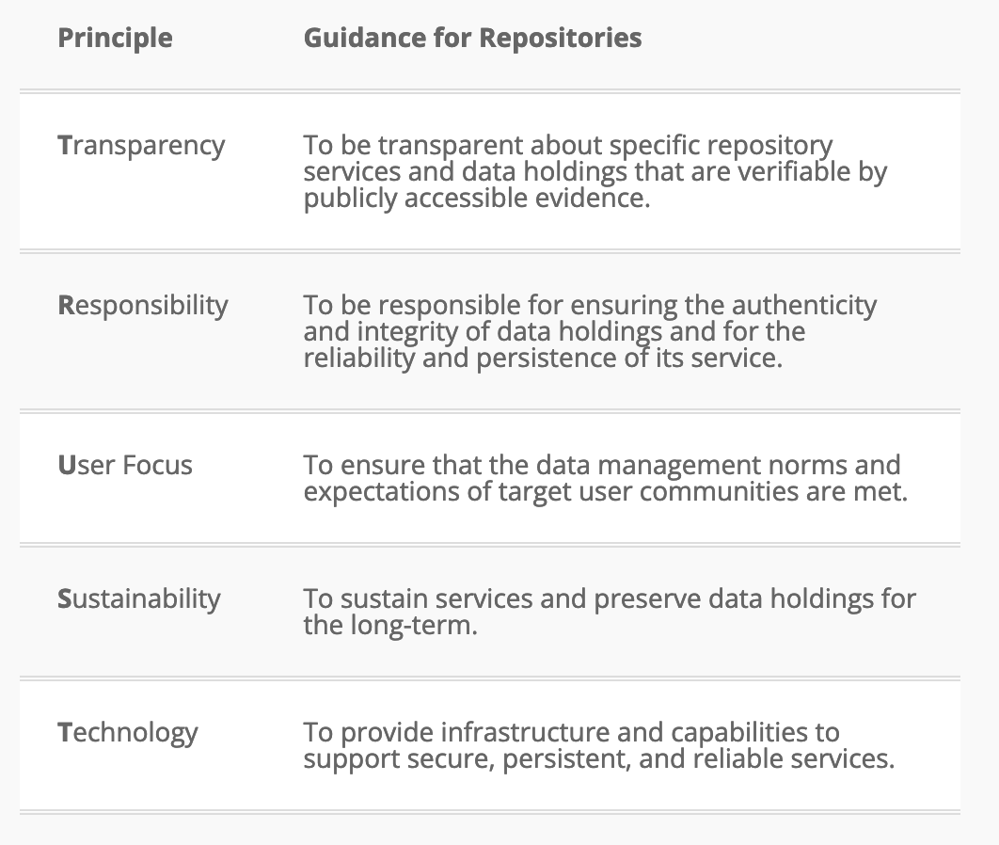
Where to share: Data or software paper
For data or software of special importance, you may consider writing a data or software article.
Pros 👍
- Additional publication
- More space to dig into methodology than in a traditional article
Cons 👎
- More time-consuming
Example of a data paper
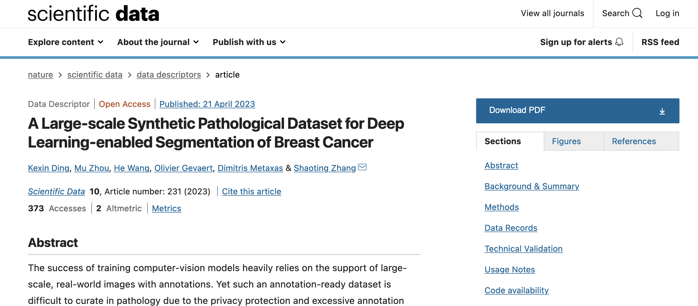
Example of a software paper
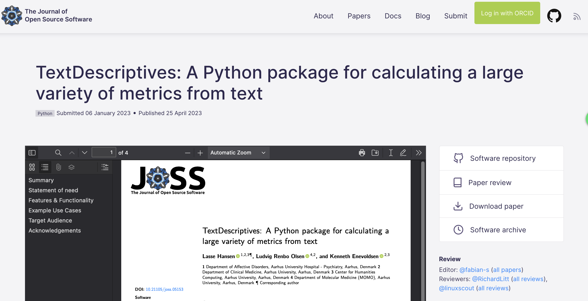
Summary
- There are more research outputs worth publishing than the traditional paper!
- These outputs should be published in accordance with the FAIR principles.
- Outputs don’t need to be open to be FAIR.
- Repositories (discipline-specific or generic) are a great place to publish your outputs.
- Data or software papers may be suitable for more impactful outputs.
Thank you!

References
- Buckheit, J.B., Donoho, D.L. (1995). WaveLab and Reproducible Research. In: Antoniadis, A., Oppenheim, G. (eds) Wavelets and Statistics. Lecture Notes in Statistics, vol 103. Springer, New York, NY. https://doi.org/10.1007/978-1-4612-2544-7_5
- Ding, K., Zhou, M., Wang, H. et al. A Large-scale Synthetic Pathological Dataset for Deep Learning-enabled Segmentation of Breast Cancer. Sci Data 10, 231 (2023). https://doi.org/10.1038/s41597-023-02125-y
- Evelina Gabasova. (2016). Star Wars social network (1.0.1) [Data set]. Zenodo. https://doi.org/10.5281/zenodo.1411479.
- Hansen et al., (2023). TextDescriptives: A Python package for calculating a large variety of metrics from text. Journal of Open Source Software, 8(84), 5153, https://doi.org/10.21105/joss.05153.
- Lin, D., Crabtree, J., Dillo, I. et al. The TRUST Principles for digital repositories. Sci Data 7, 144 (2020). https://doi.org/10.1038/s41597-020-0486-7.
- Silvester, N., B. Alako, C. Amid, et al. (2015). Content discovery and retrieval services at the European Nucleotide Archive. Vol. 43 , pp. D23-D29. DOI: 10.1093/nar/gku1129.
- The Turing Way Community, & Scriberia. (2023). Illustrations from The Turing Way: Shared under CC-BY 4.0 for reuse. Zenodo. https://doi.org/10.5281/zenodo.7587336.
Social Sciences data